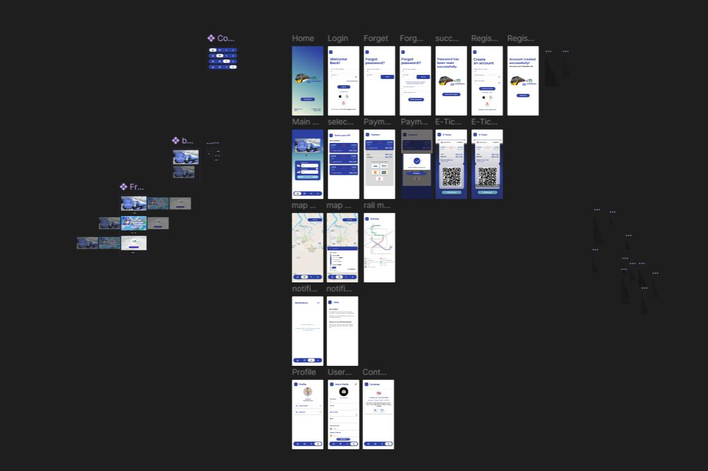
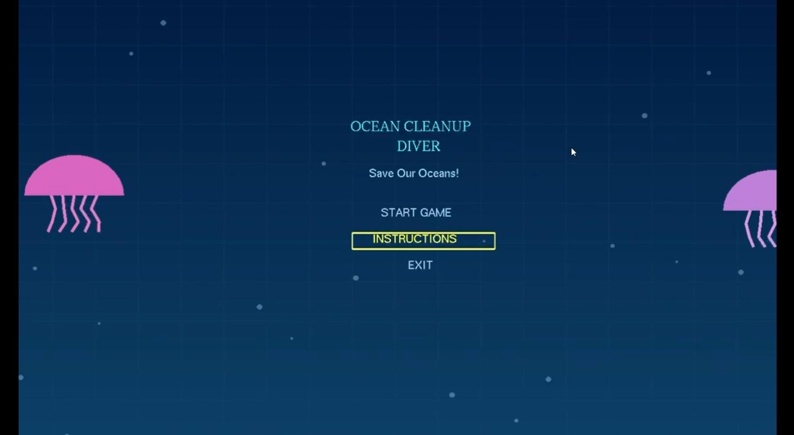
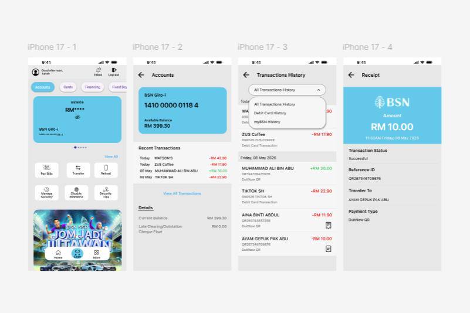
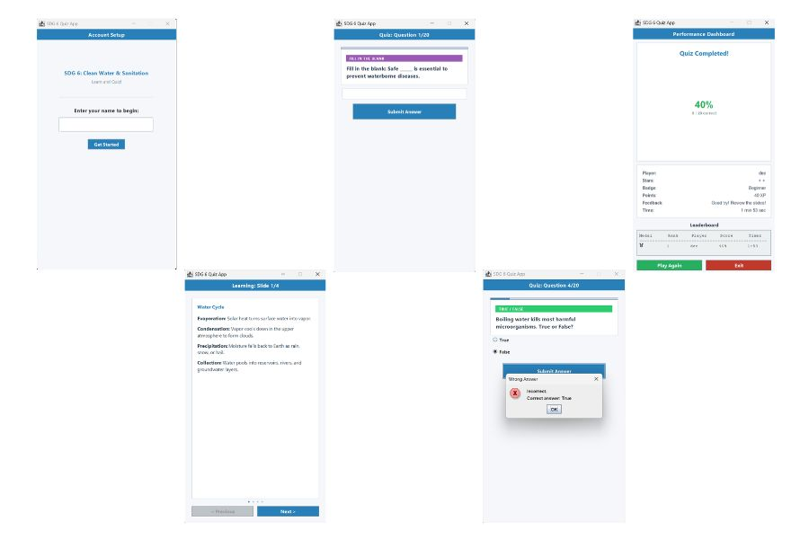
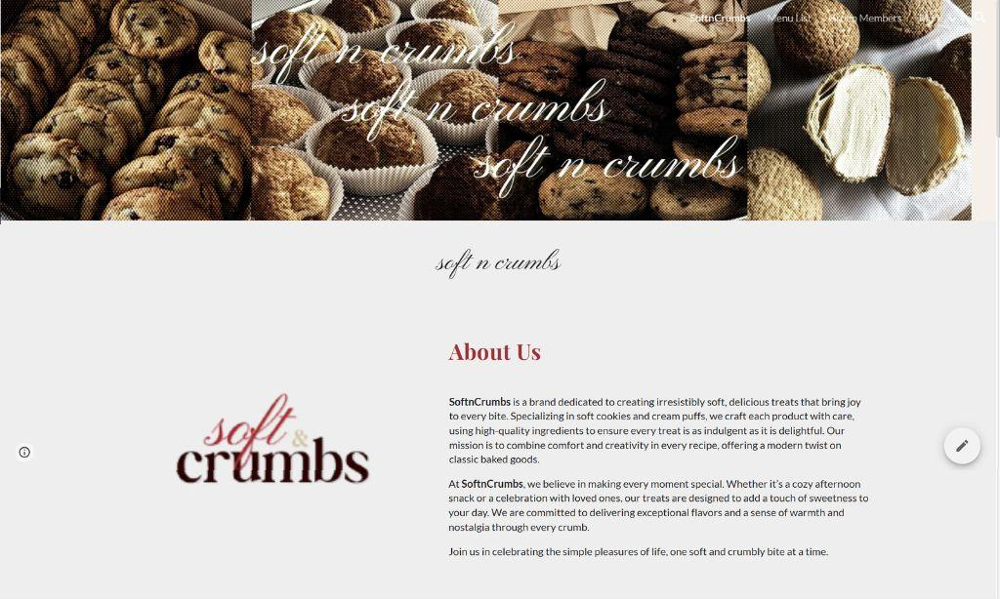

Hello ! Welcome to my
PORTFOLIO
About Me
Nurul Sartika Dewi Binti Ambri
I am a third-year Computer Science student majoring in Multimedia Computing at Universiti Malaysia Sarawak (UNIMAS). I have a strong interest in UI/UX design and front-end development, where I enjoy combining creativity and technical skills to create meaningful and user-friendly digital experiences.
My Projects

ART Sarawak Prototype App
Human Computer Interaction | Figma
The ART Sarawak Prototype App is a project that my team and I developed as part of our coursework in Human Computer Interaction. The app is designed to provide users with an interactive experience, allowing them to explore various features and functionalities. It focuses on user-centered design principles to ensure a seamless and engaging user experience.

Ocean Cleanup Diver Game
Computer Graphics | C++
The Ocean Cleanup Diver Game is a project that my team and I developed as part of our coursework in Computer Graphics using C++. The game is designed to raise awareness about ocean pollution and the importance of cleaning up our oceans. Players take on the role of a diver who collects trash from the ocean floor, navigating through various challenges and obstacles. The game incorporates realistic graphics and physics to create an immersive experience.

Redesign BSN Transaction App
UI/UX Design | Figma
The Redesign BSN Transaction App project involved improving the user interface and experience of an existing mobile application. My team and I implemented the redesigned interface to enhance usability and satisfaction.

SDG 4 Quiz App
Java Programming | Java
The SDG 4 Quiz App is a project that my team and I developed as part of our coursework in Java Programming. The app is designed to educate users about Sustainable Development Goal 4 (SDG 4) through an interactive quiz format. It features multiple-choice questions, scoring, and feedback to enhance learning and engagement.

Soft n Crumbs Website
MPU3222 Foundation of Entrepreneurship | Google Sites
The Soft n Crumbs Website project was developed as part of our coursework in MPU3222 Foundation of Entrepreneurship. The website serves as an online platform for a bakery business, showcasing their products and services. It was created using Google Sites, focusing on user-friendly navigation and appealing design to attract potential customers.
Contact me here
email: dewiambri@outlook.com